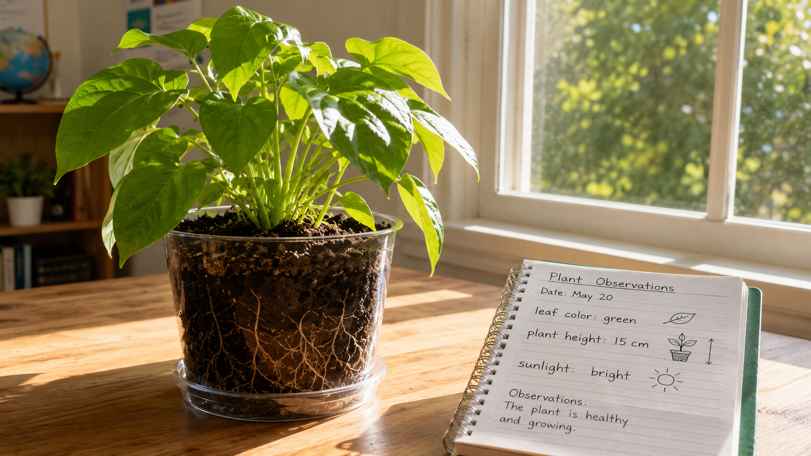
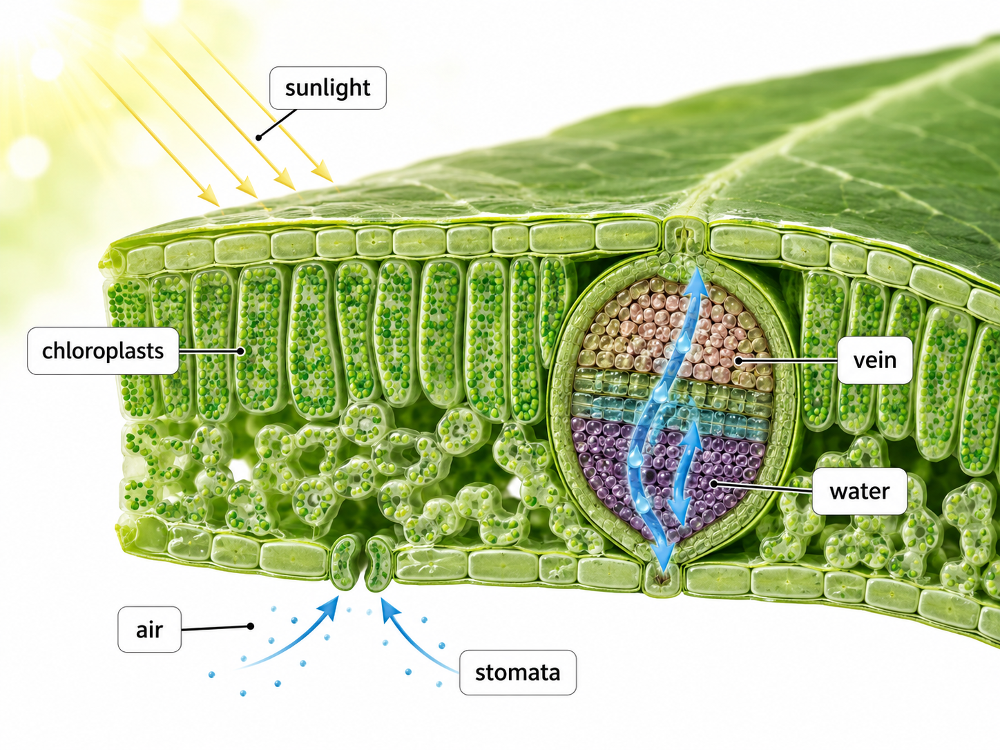
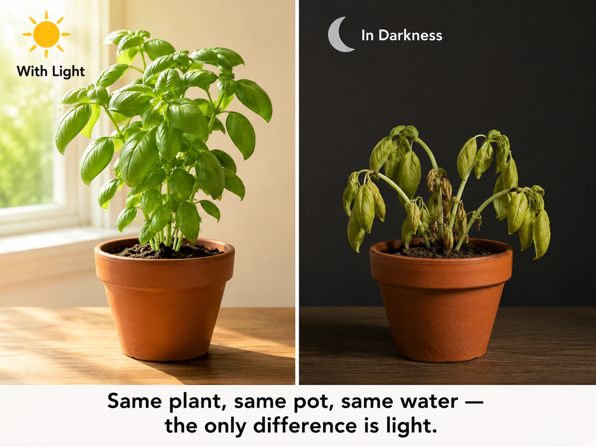

Hold this question in mind as you work. By the end, you'll be able to answer it with evidence!
Start here. Learn the words you will use today.

Take a good look at this plant before we learn anything new. Notice what you can see — above the soil and below it. What's going on in there?
No wrong observations here. Scientists always start by looking first and asking questions. We'll come back to what you noticed at the end of the lesson.
These are the words scientists use when they talk about how plants make food. Tap each card to flip it and read the definition. You'll see these throughout the lesson!
Copy this sentence carefully into your science notebook:
"Plants use sunlight, water, and air to make their own food in a process called photosynthesis."
Now learn the main science idea.
Animals eat food to get energy. Plants do something different — they make their own food. The process is called photosynthesisphotosynthesisThe process plants use to make food from sunlight, water, and air..
During photosynthesis, a plant captures sunlight and uses it to turn water and air into sugarsugarThe food plants make. They use it to grow and build new parts.. That sugar is the plant's food. It gives the plant energy to grow new roots, stems, leaves, flowers, and seeds.
Three things go into photosynthesis: sunlight, water, and air. Each part of the plant has a job.
Inside each leaf, the plant combines sunlight, water, and air to make sugar. The sugar travels through the stem to every part of the plant that needs energy.

Scientists figured out photosynthesis by watching what happens when you take sunlight away. A plant kept in the dark stops making food. Its leaves turn yellow. It gets smaller and eventually dies.

A plant in bright light stays green, grows new leaves, and keeps making sugar. That difference — between the light plant and the dark plant — is the evidence that sunlight is the key ingredient.
Real-World Connection: When you water a houseplant and set it near a sunny window, you're giving it everything it needs: water from the soil, air from the room, and light from the window.
Plants make their own food through photosynthesis. They use sunlight, water, and air to produce sugar, which gives them energy to grow.
Leaves capture light. Roots absorb water. Every part has a structure that matches its function.
Curious? Go Deeper
Why are leaves green? Inside every leaf cell are tiny structures called chloroplasts. They contain a green pigment called chlorophyll. Chlorophyll is what captures light energy — and it happens to reflect green light back to our eyes, which is why most leaves look green.
In autumn, some trees stop making chlorophyll. As it breaks down, other colors — reds, oranges, yellows — that were always there get revealed. The tree is still the same tree. The color was always hiding inside the leaf.
So the next time you see a red maple leaf in fall, you're seeing what happens when a plant slows its photosynthesis for the winter.
Now test the idea yourself.
You'll need: Science notebook, pencil, and colored pencils (green, yellow, and blue are most useful).
You're going to build a diagram model of photosynthesis — showing what goes in, what comes out, and what each plant part does. Follow each step.
Draw the plant. Sketch a plant with roots underground, a stem, and at least three leaves. Leave room above for the sun. Don't worry about making it perfect — a simple drawing is great.
Add the sun and draw arrows. Draw the sun in the upper corner. Then add three arrows: one from the sun to the leaves (sunlight), one from the roots upward (water), and one curving inward at the leaves (air).
Label your diagram. Label each arrow with what it shows. Add labels for: roots, stem, leaves, sunlight, water, air, and sugar/food. Each label should point to something on your drawing.
Think about what would change. Look at your diagram. Cover the sun with your hand. What would stop working? What would the plant be missing? Write one sentence at the bottom of your diagram answering this.
Think about each question. Talk through your ideas — a scientist's thinking is specific.
Tell the story of photosynthesis from the beginning — starting with the sun. Walk through the whole process in your own words, in order. Use your diagram to help you.
Think through each question on your own. Write your answers in your science notebook before moving on.
Check what you understand.
Show what you learned.
🔍 Part A — Label the Process
In your science notebook, draw a plant and fill in the photosynthesis process. Use the word bank: sunlight · water · air · sugar · roots · leaves · stem.
🚀 Part B — Short Answer
Answer each question in complete sentences. Use your science vocabulary.
A friend says, "Plants eat from the soil, just like animals eat food." Do you agree or disagree? Use what you learned about photosynthesis to explain.
What do you think?
💡 Start with: "I disagree / agree because plants actually…"
What did you learn that supports your thinking?
💡 Start with: "I know this because the lesson showed that plants…"
Why does that make sense?
💡 Start with: "This makes sense because…"
📚 Try to use at least one of these words in your answer: photosynthesis, sunlight, leaves
🎨 Part C — Draw & Label
Draw a "before and after" — one plant in bright sunlight and one plant kept in the dark. Label at least 3 differences you would expect to see between them.
Submit your work on Canvas using one of these options:
Make sure your submission includes all of these: